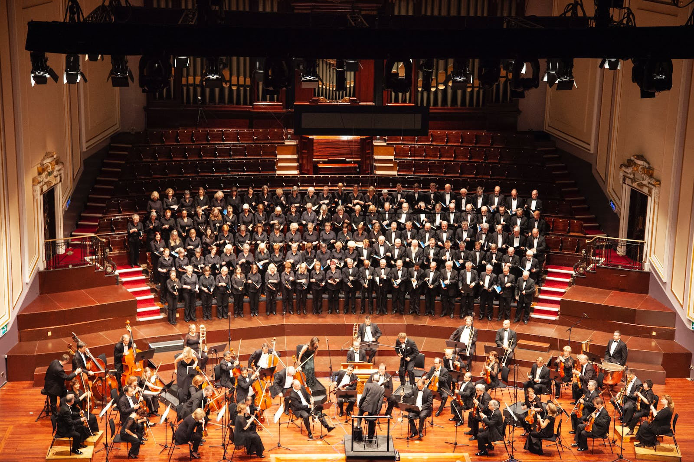
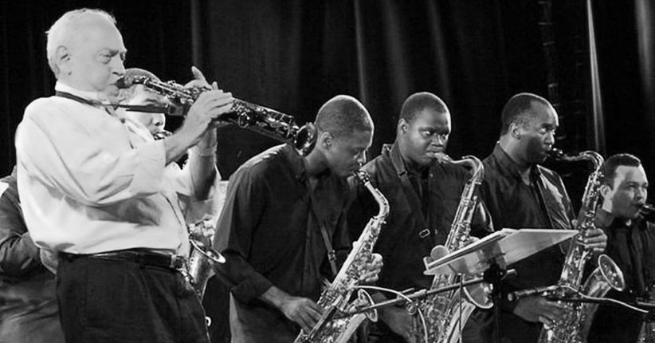
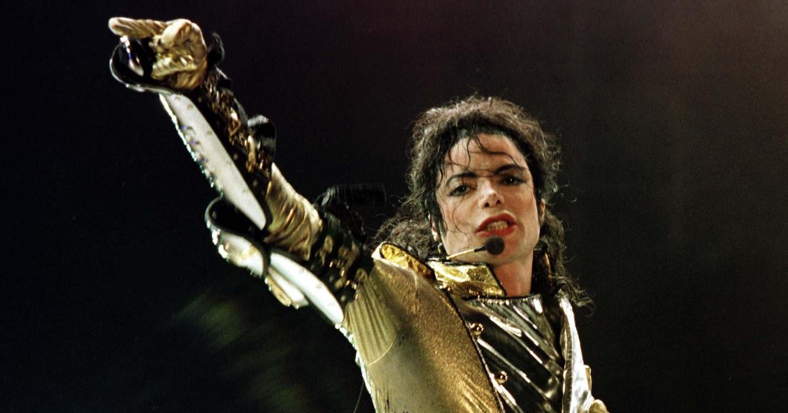
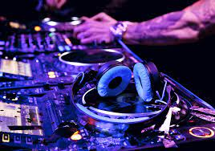
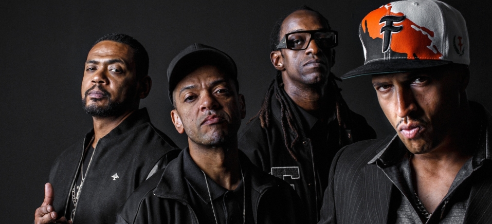
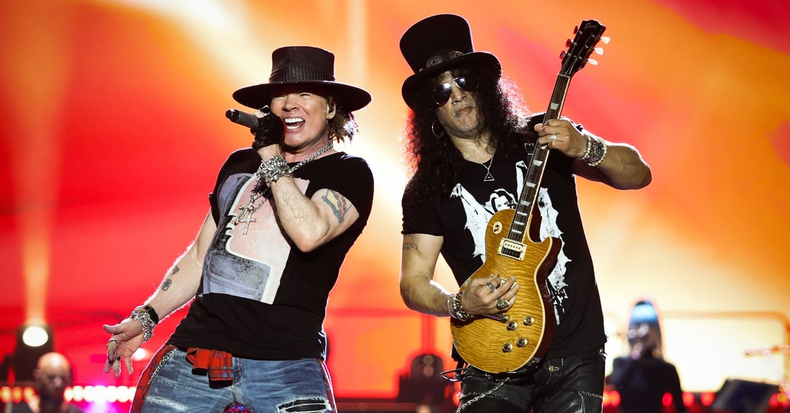
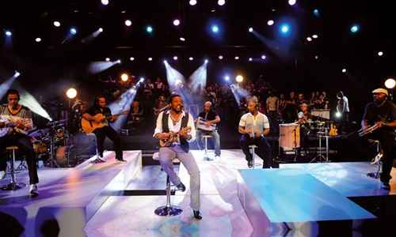
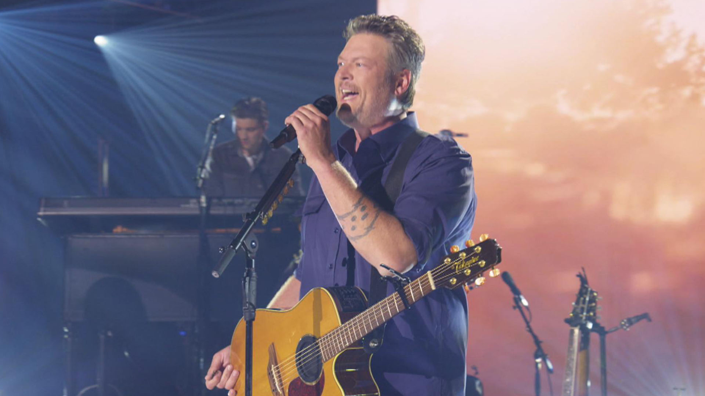

A música clássica surgiu na Europa pra divertir reis e rainhas por volta dos anos 1500. Além disso, era bastante usada também em cerimônias religiosas! E mais ou menos 200 anos depois, em 1700, começaram a aparecer as primeiras orquestras da história! Nessa época, o músico clássico mais famoso era Johann Sebastian Bach, um alemão que até hoje é tido como um dos maiores compositores desse estilo musical em todos os tempos! Além de Bach, os compositores mais famosos de música clássica são Wolfgang Amadeus Mozart e Ludwig van Beethoven. Mozart nasceu na Áustria, em 1756, e criou mais de 50 sinfonias.
O jazz é um estilo musical que nasceu nos EUA no final do século XIX e início do século XX. O surgimento do jazz tem como matriz principal a cultura africana. As pessoas que foram capturadas na África e levadas ao solo norte-americano para serem escravizadas tinham na música e no canto uma espécie de "refúgio" no qual podiam expressar-se.Depois da abolição da escravidão no país em 1863, os negros aproximam-se dos instrumentos ocidentais e ocorre uma mescla de culturas, melodias e ritmos. Posteriormente, em torno de 1890, já com o crescimento das cidades, essa efervescência sonora ganha corpo em Nova Orleans, Louisiana, mais precisamente no bairro de Storyville, em bares chamados de Honky Tonks. Louis Armstrong foi eternizado na música por seu pioneirismo no jazz, sendo o primeiro solista de trompete e dono de uma voz de barítono incomparável que lhe alçou nas paradas de sucesso da música popular norte-americana e internacional.
A música “Gospel” que vem do inglês e significa “Evangelho” é um estilo musical onde a música serve como louvor, oração ou graças a Deus, Jesus Cristo e ao Espírito Santo. O estilo teve origem nos Estados Unidos e suas raízes vieram do Blues. No Brasil o estilo foi trazido por missionários batistas e presbiterianos americanos. Algumas igrejas adotaram o Gospel e fizeram traduções de hinos conhecidos para o português. Com mais de 50 discos lançados, desde os anos 1960, e mais de 100 milhões de cópias vendidas, Roberto Carlos ficou conhecido como "o Rei", compôs dezenas de músicas inspiradas na fé cristã e no estilo gospel americano.
A Música Pop (tem esse nome por ser um termo que deriva da abreviação de "popular") surgiu nos Estados Unidos na década de 50. O estilo musical é marcado pela conservação da estrutura formal da música: “verso – estribilho – verso”, executada de modo sensível e melódico, normalmente assimilado por um grande público. Michael Jackson foi um dos artistas mais influentes na música popular, e sua influência na música pop é particularmente significativa. Em primeiro lugar, ele foi uma figura importante no surgimento do estilo musical conhecido como “pop rock”, em 1989, ao dar um prêmio a Michael Jackson, a atriz Elizabeth Taylor, muito amiga dele, chamou-o de “o rei do pop”. Desde então, o cantor começou a ser chamado por esse apelido no mundo todo.
A música eletrônica, nos moldes que conhecemos hoje, começou a ser desenvolvida em 1948, quando o músico francês, Pierre Schaeffer passou a unir instrumentos diferentes e gravações de toca-discos em uma única música, fazendo surgir posteriormente as mixagens sonoras. A popularização da música eletrônica no mundo se deu com o surgimento dos sintetizadores digitais, mas foi a partir do uso de softwares e computadores pessoais que o ritmo virou febre. Graças a esses equipamentos, passou a ser possível utilizar recursos de áudio e emular funcionalidades próprias de instrumentos musicais ou de sintetizadores. A música eletrônica sempre esteve presentes em nossas vidas, mas com a popularização, principalmente, do Electro House, Progressive House e Big Room, com artistas como David Guetta, Swedish House Mafia, Avicci, Alesso, Hardwell, Martin Garrix, etc.
A palavra Rap, tem como significados, ritmo e poesia. Ou seja, é uma mistura de ritmos intensos, com rimas poéticas, integrando o contexto social, cultural e politico onde está inserido. Segundo consta, surgiu na Jamaica durante a década de 60, e foi levado para os EUA, na década de 70. Mais propriamente para os bairros pobres de Nova Iorque, onde os jovens de origem negra e espanica, que em busca de uma sonoridade diferente, deram assim um novo impulso e um novo significa ao Rap. No Brasil o rap não era bem aceite pelas pessoas em geral, pois era considerado um estilo de musica mutio violento e típico da periferia. Vai ser só na década de 90, que o rap vai ganhar força, com as rádios e a industria fonográfica, que passa a dar mais atenção a este novo estilo de musica. Os primeiros rappers a terem sucesso foram o DJ Hum e Thayde. Depois deles vieram nomes como Racionais MCs, Planet HEmp, Pavilhão 9, Detentos do Rap, Cambio Negros, Xis & Dentinho e o Gabriel, O Pensador, que até hoje é uma referência incontestada.
A palavra rock é uma derivação do termo em inglês "rocking and rolling", que pode ser entendido como "balançar e rolar", sugerindo uma dança com conotação sexual. Assim, o rock já surge com uma aura transgressora e rebelde. O Rock surgiu na década de 50 através da mistura de três gêneros musicais: Blues, Country e Jazz. Assim, surgiu o Classic Rock, uma mistura de vários gêneros musicais. Os norte-americanos Jerry Lee Lewis, Johnny Cash, Bill Haley e Chuck Berry, conhecido como o “pai do rock”, foram alguns dos precursores. Porém, o estilo musical tornou-se mais popular por meio das apresentações de Elvis Presley, considerado por muitos como o “o rei do rock”.
O samba foi criado no Brasil e sua origem são os batuques trazidos pelos negros escravizados, misturados aos ritmos europeus, como a polca, a valsa, a mazurca, o minueto, entre outros. Inicialmente, as festas de danças dos negros escravos na Bahia eram chamadas de "samba". O samba brasileiro tem muitos nomes que batalharam por sua construção.
Pra começar, lá nos anos de 1920, os moradores da zona rural do Sul e Sudeste dos Estados Unidos começaram a fazer música usando instrumentos que vinham da Europa e da África. Daí surgiu o country. Em 1932, a cidade de Nashville, nos Estados Unidos, ganhou uma joia preciosa para a música country, o cantor e compositor Johnny Cash. Músico referência no mundo country, ele teve uma carreira de quase 50 anos cheia de sucessos, como “Folsom Prison Blues”, “I walk the line”, “Ring of fire”, “A boy named Sue” e muito mais. Conhecido entre os seus fãs mais fiéis como “O Homem de Preto”.
 footer class="ft">feito por: Luiz, Rayssa e Kauan